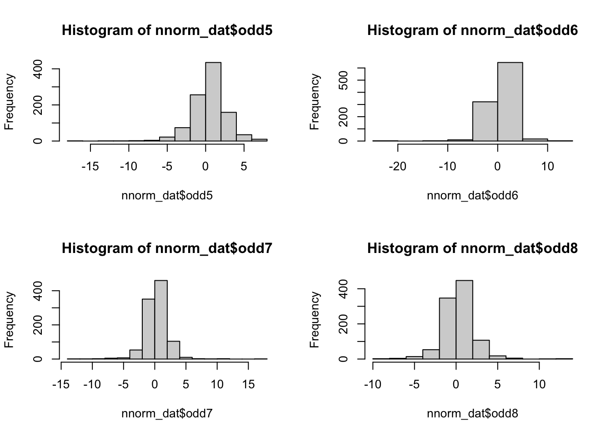
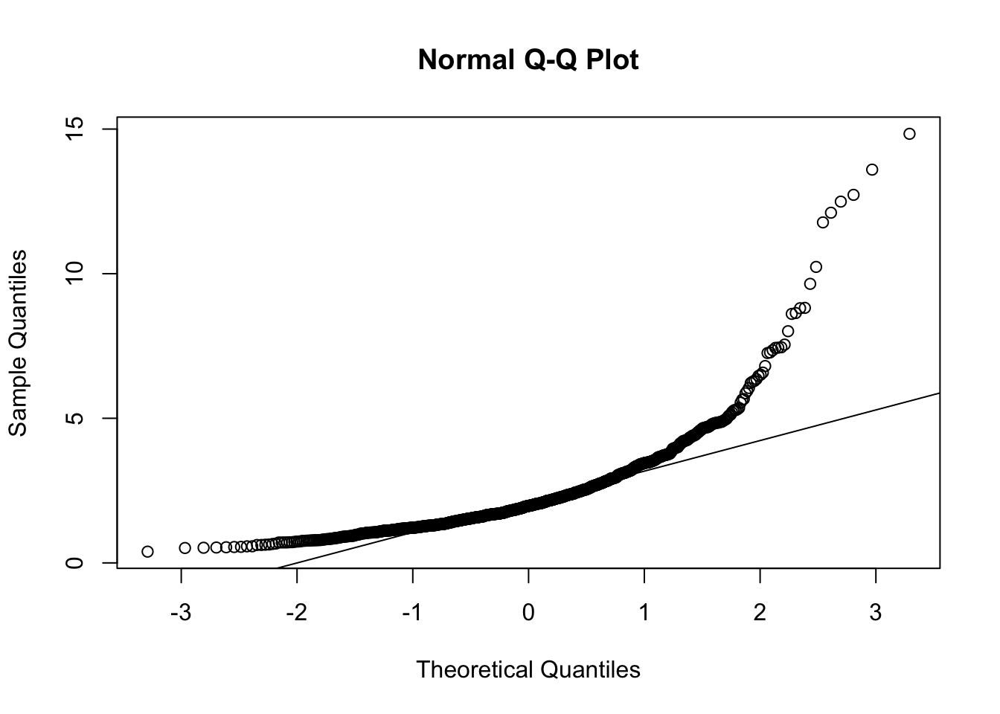

Chapter 16 Lavaan Lab 13: SEM for Nonnormal and Categorical Data
Load up the lavaan library:
library(lavaan)16.1 PART I: Nonnormality Diagnosis
Let’s first load the simulated non-normal data and look at the normality/nonnormality of the items:
nnorm_dat <- read.csv("nonnormal.csv", header = T)
head(nnorm_dat)## odd1 odd2 odd3 odd4 odd5 odd6 odd7 odd8
## 1 1.455398 1.1968135 -0.52181159 -1.9651704 -4.2353119 1.0959168 1.1434283 -0.4393833
## 2 6.517492 2.7962582 0.56780460 4.6117031 5.0850284 1.4194502 1.3925536 5.2085814
## 3 2.047266 -2.1148975 -1.35879880 0.6664211 3.1903653 2.0040147 0.5134188 0.2114613
## 4 8.251226 4.9818940 10.29910350 7.5773213 0.2595174 1.8953510 -2.5800594 -2.0036514
## 5 3.553213 4.7921231 2.44286008 1.4219472 0.5007659 1.2665319 0.4181851 1.1586593
## 6 2.728876 -0.3436493 0.07283766 -1.8742132 -3.0228869 0.5607386 -0.7374122 -0.3249854par(mfrow = c(2, 2)) #opens graph window with 2 rows 2 columns
hist(nnorm_dat$odd5)
hist(nnorm_dat$odd6)
hist(nnorm_dat$odd7)
hist(nnorm_dat$odd8)
Use describe() function from the psych package to get univariate descriptives:
#install.packages("psych")
library(psych)
describe(nnorm_dat)## vars n mean sd median trimmed mad min max range skew kurtosis se
## odd1 1 1000 1.23 2.19 1.18 1.17 1.49 -9.50 18.41 27.91 0.87 7.77 0.07
## odd2 2 1000 0.91 2.18 0.87 0.89 1.65 -12.49 17.81 30.30 0.45 7.07 0.07
## odd3 3 1000 1.05 2.21 1.02 1.03 1.41 -18.10 22.44 40.55 0.58 18.62 0.07
## odd4 4 1000 0.65 2.19 0.55 0.62 1.64 -18.04 12.43 30.47 -0.39 8.35 0.07
## odd5 5 1000 0.46 2.24 0.56 0.53 1.66 -16.83 7.79 24.62 -0.99 6.17 0.07
## odd6 6 1000 0.54 2.32 0.63 0.62 1.59 -24.87 12.98 37.84 -2.37 24.73 0.07
## odd7 7 1000 0.26 1.91 0.23 0.28 1.32 -12.30 16.58 28.87 0.07 12.23 0.06
## odd8 8 1000 0.28 1.89 0.24 0.28 1.33 -8.26 12.64 20.90 0.39 6.23 0.06Use mardia() from the psych package to test multivariate normality:
par(mfrow = c(1, 1)) #opens graph window
mardia(nnorm_dat)
## Call: mardia(x = nnorm_dat)
##
## Mardia tests of multivariate skew and kurtosis
## Use describe(x) the to get univariate tests
## n.obs = 1000 num.vars = 8
## b1p = 40.96 skew = 6827.1 with probability <= 0
## small sample skew = 6852.15 with probability <= 0
## b2p = 323.37 kurtosis = 304.21 with probability <= 0In any case, these data are clearly far from normal, so …
16.2 PART II: Robust corrections
Write out syntax for a one-factor CFA model:
cfaSyn <- "
odd =~ odd1 + odd2 + odd3 + odd4 + odd5 + odd6 + odd7 + odd8
"Fit the one-factor model:
mlrFit <- lavaan::sem(cfaSyn,
data = nnorm_dat,
fixed.x = FALSE,
estimator = "mlr")
summary(mlrFit, fit.measure = T)## lavaan 0.6-12 ended normally after 34 iterations
##
## Estimator ML
## Optimization method NLMINB
## Number of model parameters 16
##
## Number of observations 1000
##
## Model Test User Model:
## Standard Robust
## Test Statistic 430.290 125.915
## Degrees of freedom 20 20
## P-value (Chi-square) 0.000 0.000
## Scaling correction factor 3.417
## Yuan-Bentler correction (Mplus variant)
##
## Model Test Baseline Model:
##
## Test statistic 1692.974 454.468
## Degrees of freedom 28 28
## P-value 0.000 0.000
## Scaling correction factor 3.725
##
## User Model versus Baseline Model:
##
## Comparative Fit Index (CFI) 0.754 0.752
## Tucker-Lewis Index (TLI) 0.655 0.652
##
## Robust Comparative Fit Index (CFI) 0.772
## Robust Tucker-Lewis Index (TLI) 0.681
##
## Loglikelihood and Information Criteria:
##
## Loglikelihood user model (H0) -16785.305 -16785.305
## Scaling correction factor 5.604
## for the MLR correction
## Loglikelihood unrestricted model (H1) -16570.161 -16570.161
## Scaling correction factor 4.389
## for the MLR correction
##
## Akaike (AIC) 33602.611 33602.611
## Bayesian (BIC) 33681.135 33681.135
## Sample-size adjusted Bayesian (BIC) 33630.318 33630.318
##
## Root Mean Square Error of Approximation:
##
## RMSEA 0.143 0.073
## 90 Percent confidence interval - lower 0.132 0.066
## 90 Percent confidence interval - upper 0.155 0.079
## P-value RMSEA <= 0.05 0.000 0.000
##
## Robust RMSEA 0.135
## 90 Percent confidence interval - lower 0.113
## 90 Percent confidence interval - upper 0.157
##
## Standardized Root Mean Square Residual:
##
## SRMR 0.077 0.077
##
## Parameter Estimates:
##
## Standard errors Sandwich
## Information bread Observed
## Observed information based on Hessian
##
## Latent Variables:
## Estimate Std.Err z-value P(>|z|)
## odd =~
## odd1 1.000
## odd2 1.095 0.146 7.499 0.000
## odd3 1.035 0.172 6.000 0.000
## odd4 0.946 0.150 6.317 0.000
## odd5 0.778 0.198 3.920 0.000
## odd6 0.939 0.178 5.282 0.000
## odd7 0.810 0.158 5.135 0.000
## odd8 0.890 0.144 6.198 0.000
##
## Variances:
## Estimate Std.Err z-value P(>|z|)
## .odd1 3.312 0.486 6.814 0.000
## .odd2 3.003 0.295 10.197 0.000
## .odd3 3.310 0.410 8.074 0.000
## .odd4 3.490 0.482 7.234 0.000
## .odd5 4.105 0.418 9.811 0.000
## .odd6 4.092 0.645 6.345 0.000
## .odd7 2.665 0.437 6.099 0.000
## .odd8 2.394 0.232 10.313 0.000
## odd 1.469 0.355 4.138 0.00016.3 PART III: Categorical Data Analysis in Lavaan
Let’s load the simulated data in which ODD items are ordinal:
odd <- read.csv("oddData.csv", header = T)
head(odd)## id odd1 odd2 odd3 odd4 odd5 odd6 odd7 odd8
## 1 4 1 1 1 1 1 0 0 0
## 2 7 2 0 1 0 0 0 1 0
## 3 12 2 0 1 0 1 0 0 0
## 4 14 1 1 2 1 1 1 0 1
## 5 37 1 1 1 0 0 0 0 0
## 6 39 1 1 1 0 0 1 1 0Write out syntax for a one-factor CFA model:
oddOneFac = '
#Specify Overall Odd Factor
odd =~ odd1 + odd2 + odd3 + odd4 + odd5 + odd6 + odd7 + odd8
'- Fit the one-factor model:
- label ordinal variables using ordered argument:
- ordered = c( #NAMES OF ORDINAL INDICATORS#)
oneFacFit <- lavaan::sem(oddOneFac,
data = odd,
ordered=c('odd1','odd2','odd3','odd4','odd5','odd6','odd7','odd8'),
fixed.x = FALSE,
parameterization = 'theta') # or delta
#declare these as ordered variable
summary(oneFacFit, fit.measures = T)## lavaan 0.6-12 ended normally after 34 iterations
##
## Estimator DWLS
## Optimization method NLMINB
## Number of model parameters 24
##
## Number of observations 221
##
## Model Test User Model:
## Standard Robust
## Test Statistic 44.892 63.690
## Degrees of freedom 20 20
## P-value (Chi-square) 0.001 0.000
## Scaling correction factor 0.732
## Shift parameter 2.377
## simple second-order correction
##
## Model Test Baseline Model:
##
## Test statistic 888.285 643.487
## Degrees of freedom 28 28
## P-value 0.000 0.000
## Scaling correction factor 1.398
##
## User Model versus Baseline Model:
##
## Comparative Fit Index (CFI) 0.971 0.929
## Tucker-Lewis Index (TLI) 0.959 0.901
##
## Robust Comparative Fit Index (CFI) NA
## Robust Tucker-Lewis Index (TLI) NA
##
## Root Mean Square Error of Approximation:
##
## RMSEA 0.075 0.100
## 90 Percent confidence interval - lower 0.046 0.073
## 90 Percent confidence interval - upper 0.105 0.128
## P-value RMSEA <= 0.05 0.076 0.002
##
## Robust RMSEA NA
## 90 Percent confidence interval - lower NA
## 90 Percent confidence interval - upper NA
##
## Standardized Root Mean Square Residual:
##
## SRMR 0.085 0.085
##
## Parameter Estimates:
##
## Standard errors Robust.sem
## Information Expected
## Information saturated (h1) model Unstructured
##
## Latent Variables:
## Estimate Std.Err z-value P(>|z|)
## odd =~
## odd1 1.000
## odd2 0.850 0.180 4.725 0.000
## odd3 0.759 0.152 4.981 0.000
## odd4 0.602 0.138 4.373 0.000
## odd5 0.404 0.099 4.079 0.000
## odd6 0.607 0.128 4.735 0.000
## odd7 0.848 0.190 4.456 0.000
## odd8 0.871 0.186 4.694 0.000
##
## Intercepts:
## Estimate Std.Err z-value P(>|z|)
## .odd1 0.000
## .odd2 0.000
## .odd3 0.000
## .odd4 0.000
## .odd5 0.000
## .odd6 0.000
## .odd7 0.000
## .odd8 0.000
## odd 0.000
##
## Thresholds:
## Estimate Std.Err z-value P(>|z|)
## odd1|t1 -1.884 0.203 -9.262 0.000
## odd1|t2 0.613 0.136 4.500 0.000
## odd2|t1 -0.970 0.136 -7.122 0.000
## odd2|t2 1.138 0.147 7.721 0.000
## odd3|t1 -1.355 0.153 -8.869 0.000
## odd3|t2 1.018 0.134 7.587 0.000
## odd4|t1 0.076 0.103 0.737 0.461
## odd4|t2 1.699 0.167 10.168 0.000
## odd5|t1 0.031 0.093 0.335 0.737
## odd5|t2 1.417 0.129 10.962 0.000
## odd6|t1 -0.174 0.103 -1.680 0.093
## odd6|t2 1.568 0.153 10.276 0.000
## odd7|t1 0.632 0.134 4.711 0.000
## odd7|t2 2.692 0.325 8.287 0.000
## odd8|t1 0.981 0.151 6.510 0.000
## odd8|t2 2.547 0.283 9.003 0.000
##
## Variances:
## Estimate Std.Err z-value P(>|z|)
## .odd1 1.000
## .odd2 1.000
## .odd3 1.000
## .odd4 1.000
## .odd5 1.000
## .odd6 1.000
## .odd7 1.000
## .odd8 1.000
## odd 1.330 0.382 3.483 0.000
##
## Scales y*:
## Estimate Std.Err z-value P(>|z|)
## odd1 0.655
## odd2 0.714
## odd3 0.753
## odd4 0.822
## odd5 0.906
## odd6 0.819
## odd7 0.715
## odd8 0.70516.4 PART IV: What if you have it all?
- Unfortunately you cannot use missing = ‘fiml’ for categorical data:
FitMessy <- lavaan::sem(oddOneFac,
data = odd,
ordered=c('odd1','odd2','odd3','odd4','odd5','odd6','odd7','odd8'),
fixed.x = FALSE,
estimator = "DWLS",
#missing = 'fiml'
)
FitMessy## lavaan 0.6-12 ended normally after 16 iterations
##
## Estimator DWLS
## Optimization method NLMINB
## Number of model parameters 24
##
## Number of observations 221
##
## Model Test User Model:
##
## Test statistic 44.892
## Degrees of freedom 20
## P-value (Chi-square) 0.001#summary(FitMessy, fit.measures = T)- But you cannot use missing = ‘fiml’ together with MLR for nonnormal data:
FitMessy <- lavaan::sem(oddOneFac,
data = nnorm_dat,
#ordered=c('odd1','odd2','odd3','odd4','odd5','odd6','odd7','odd8'),
fixed.x = FALSE,
estimator = "mlr",
missing = 'fiml')
FitMessy## lavaan 0.6-12 ended normally after 34 iterations
##
## Estimator ML
## Optimization method NLMINB
## Number of model parameters 24
##
## Number of observations 1000
## Number of missing patterns 1
##
## Model Test User Model:
## Standard Robust
## Test Statistic 430.290 125.915
## Degrees of freedom 20 20
## P-value (Chi-square) 0.000 0.000
## Scaling correction factor 3.417
## Yuan-Bentler correction (Mplus variant)#summary(FitMessy, fit.measures = T)